Шесть вариантов тёмной панели рядом с формой. Цвета «Лес», шрифт «Классика»; панель автоматически подхватывает выбранную гамму и тёмную тему. На телефоне панель сжимается до шапки с одной фразой.
Идея: Слоган, три пункта пользы и пример уведомления.
Плюсы: Универсальный, знакомый по прототипу. Пример показывает продукт.
Минусы: Много текста; пример мелкий, слоган повторяет главную.
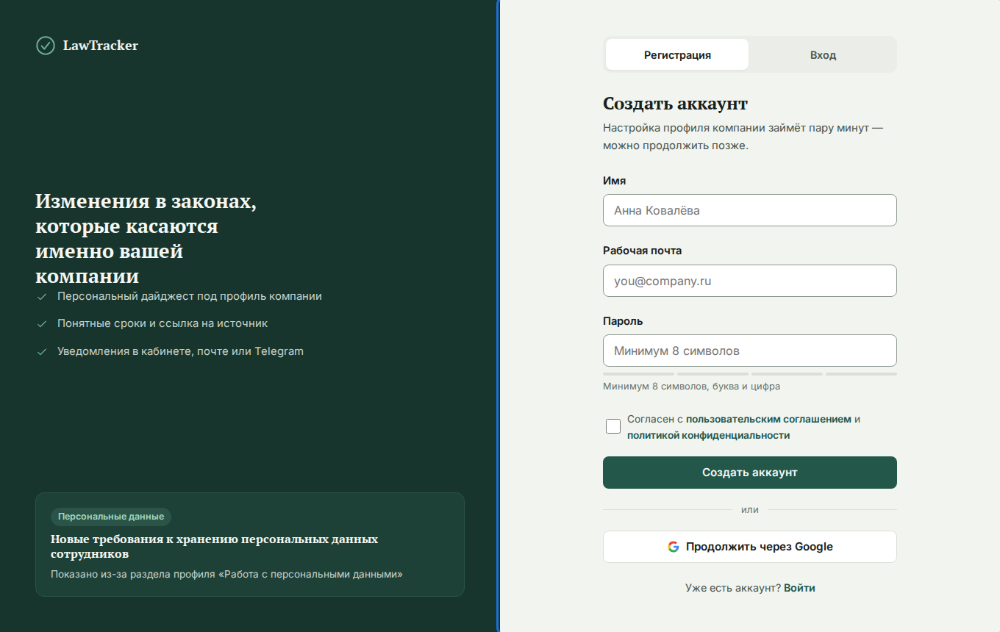
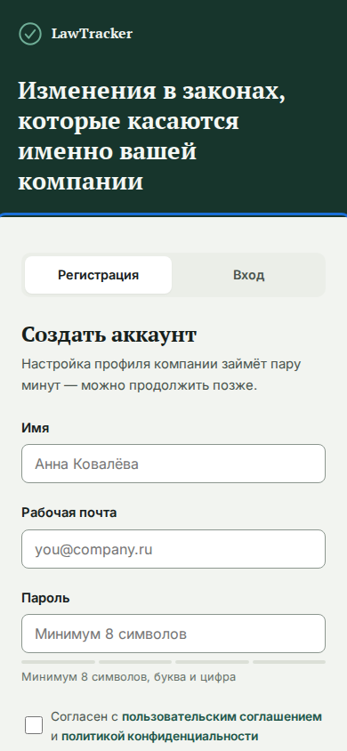
Идея: Продолжает идею главной страницы: что изменилось, касается ли нас, что сделать.
Плюсы: Единый посыл с главной, коротко и понятно с первого взгляда.
Минусы: Нет визуального образа продукта.
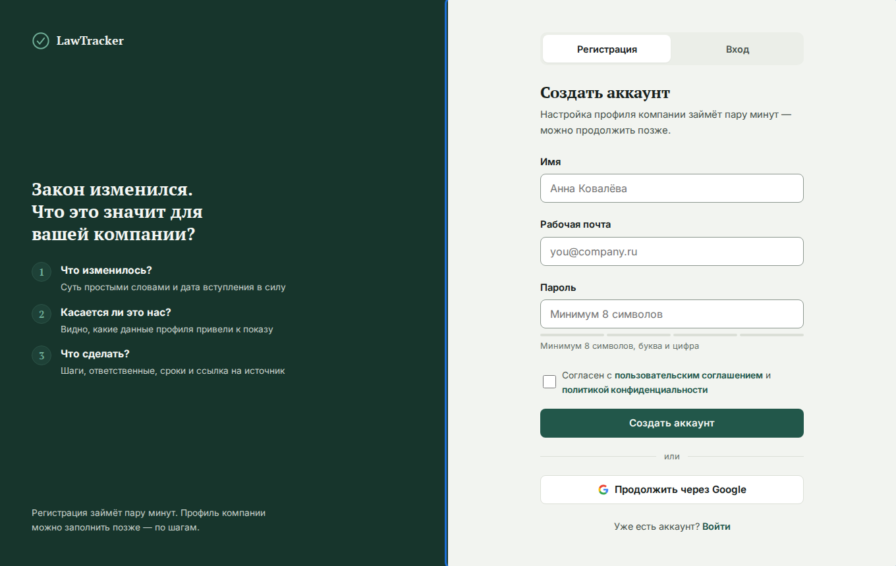
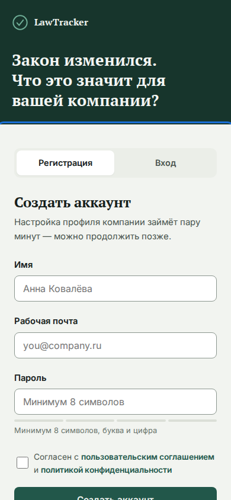
Идея: Вертикальный степпер из трёх шагов: регистрация → профиль → дайджест; четвёртый пункт «Дальше: действия и напоминания» дан отдельно, без номера. Текущий шаг отмечен.
Плюсы: Снимает страх длинной анкеты (принцип «постепенного вовлечения» из ТЗ), задаёт ожидания.
Минусы: Меньше «продукта» и больше процесса.
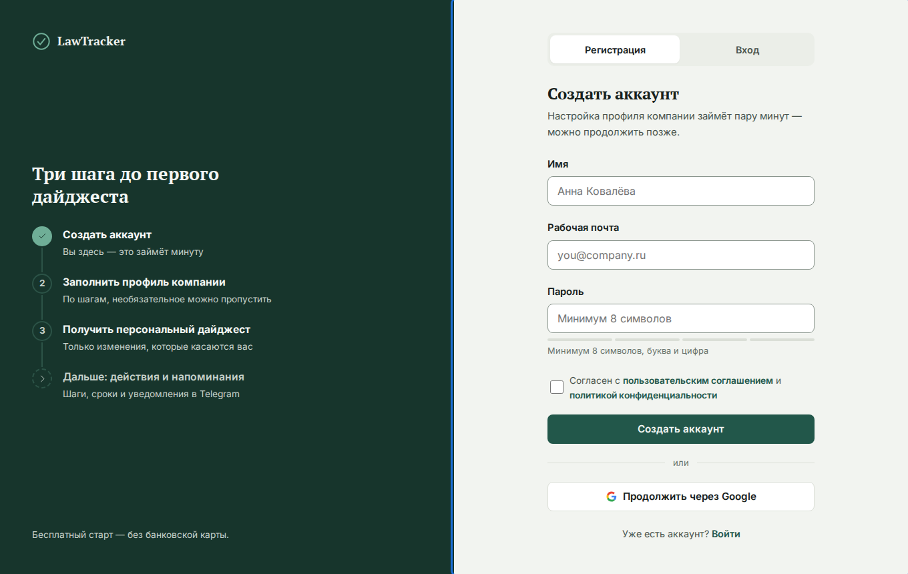
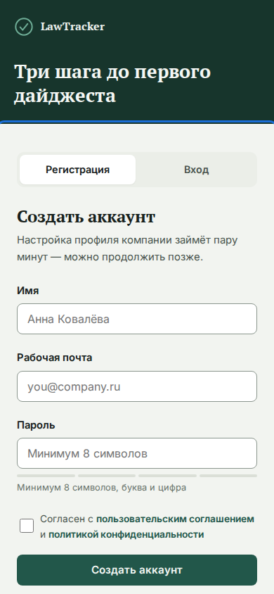
Идея: Крупная светлая карточка изменения с сроком, причиной показа и ответственным.
Плюсы: Самое наглядное доказательство ценности продукта прямо в момент регистрации.
Минусы: Карточка вымышленная; нужно держать метку «Пример».
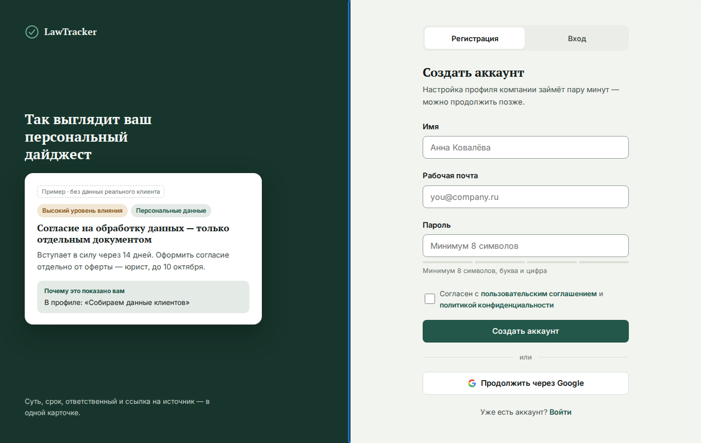
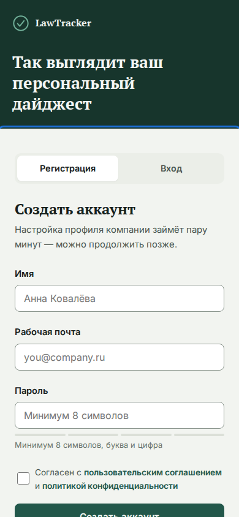
Идея: Телефон с сообщениями бота: показывает второй канал доставки.
Плюсы: Подчёркивает удобство и лёгкость; выделяется среди конкурентов.
Минусы: Акцент на канале, а не на анализе; кабинет остаётся основным.
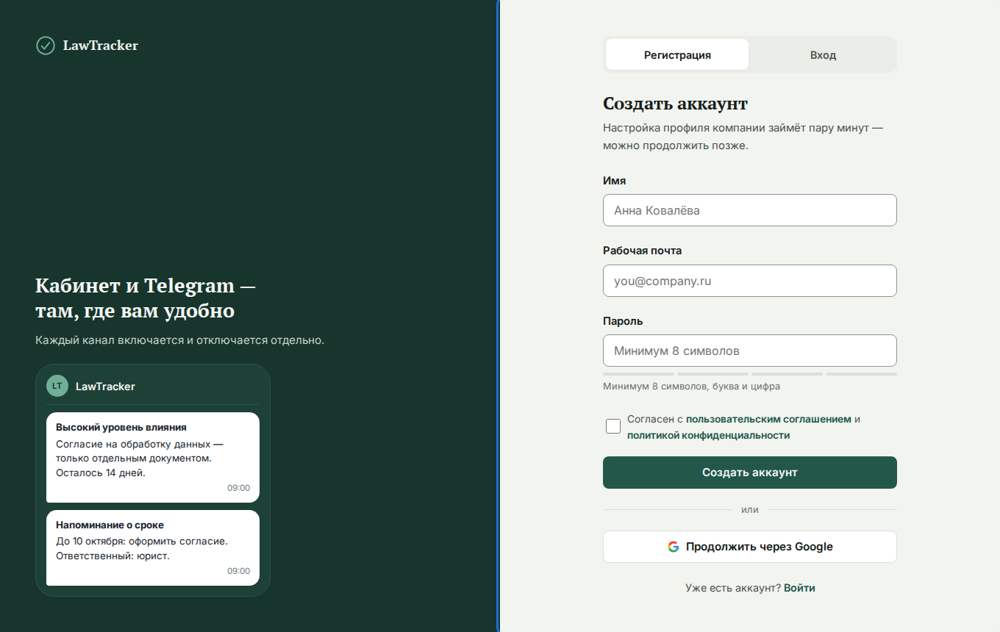
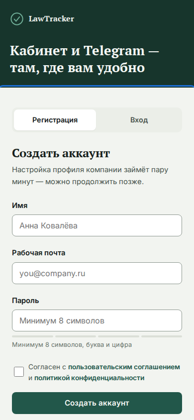
Идея: Цитата из презентации и три принципа: источник, уровень уверенности, контроль данных.
Плюсы: Работает на юристов и комплаенс: снижает тревогу перед вводом данных о компании.
Минусы: Самый «текстовый» и спокойный вариант, меньше эмоции.
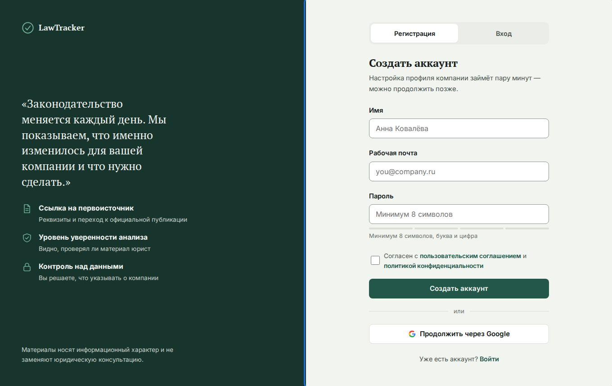
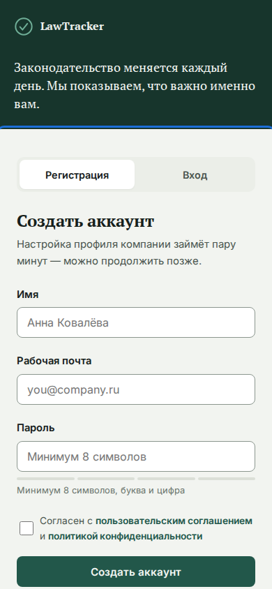
?panel=steps, например index.html#/register?panel=trust. Значения: current, questions, steps, sample, telegram, trust.